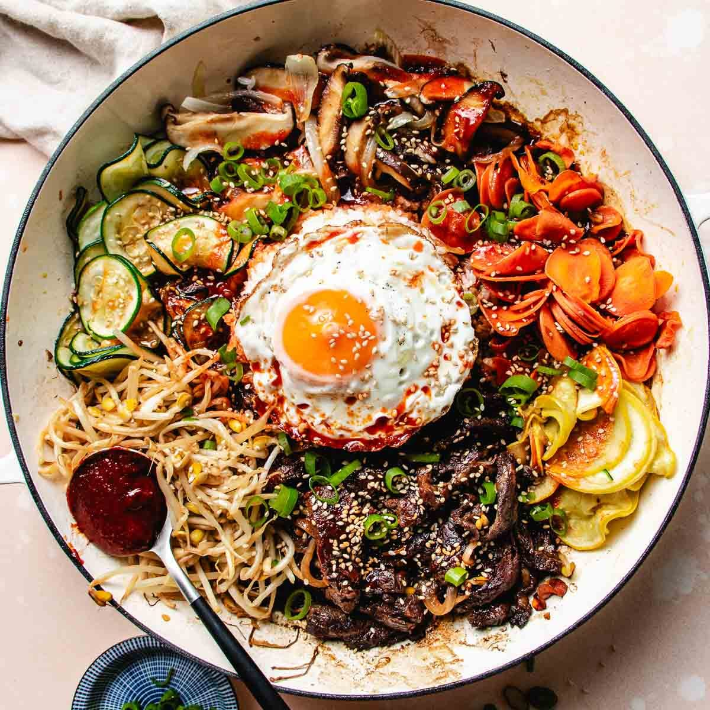
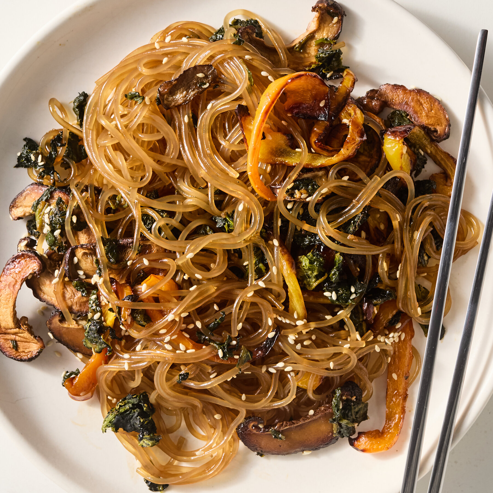

Tteokbokki
Rice cake stir-fried in spicy and sweet sauce.
Pojangmacha, Seoul
Rice cake stir-fried in spicy and sweet sauce.
Pojangmacha, Seoul

Mixed rice bowl with vegetables, egg, and chili paste.
Myeongdong Street, Seoul

Glass noodles stir-fried with vegetables and sesame oil.
Jongno-gu, Seoul